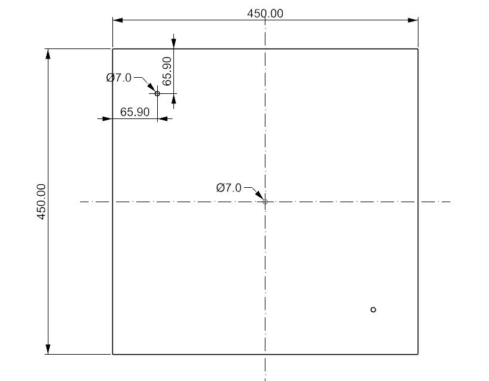

OpenSourceHardware Playtronica#
Welcome! Here you can find lots of Info and materials to start building your own instruments with sensors and Interfaces designed by Playtronica. You can get the electronics parts here, all other needed Materials can be sourced locally or from your preferred vendor.
OpenSource Statement#
This project was done as a cooperation of Playtroinca and the Fachgebiet Qualitätswissenschaften at TU Berlin. 23
Intro OpenSource Hardware#
This is a manual to help you build your own version of the OBIOrbita
Mainboard adnd Sensors#
you can get the electronic parts from here https://shop.playtronica.com/)
about#
This is a manual to help you build your own version of the OBIOrbita
Mainboard adnd Sensors#
you can get the electronic parts from here https://shop.playtronica.com/)
OBI Orbita Introduction#
Obi Intro
ObiOrbita Construction Manual#

This manual will guide you through the process of building and assembling your own OBI Orbita. We recommend to wait untill you have all parts so the assembly can go fast and without interruption.
name |
amount |
|---|---|
IKEA Snudda |
1 |
Naturkork Platten, geschliffen 3,0 x 202 x 456 mm |
2 |
Stahlringe verzinkt, silber ø 100 x 2-3 mm |
1 |
Stahlringe verzinkt, silber ø 200 x 3-4 mm |
1 |
Stahlringe verzinkt, silber ø 300 x 3-4 mm |
1 |
12 mm Multiplex Birke 450mm x 450mm |
1 |
12 mm Multiplex Birke 500mm x 50mm |
2 |
DIN 7991 M6 x 25 8.8 |
4 |
Distanzmuffe M6 40 mm |
2 |
DIN 1473 6 x 40 St |
1 |
12 V Dc Getriebemotor |
1 |
Schrauben und Co |
1 |
Double sided tape |
1 |
Hotglue |
1 |
Orbita electronics by Playtronica |
1 |
Bill of Material for an OBI Orbita <!— maybe link to Excell? —>
Preparations and setup#
You need some space to work on the parts and ideally a worksurface that can get used a bit. After all we are working with wood drills, hotglue and boxcutters. The whole build only needs some very basic handtools, but make sure you have all of them at hand, to avoid running into issues during the build process. You will need a battery drill, a drill bit set, a 15 mm Faustner drill or similar, Allenkeys, a box cutter, a wrench with a 13mm nut, a Hotgluegun and some measuring and marking utensils.
 Needed tools for the build
Needed tools for the build
Makeing the base and the bridge#
The only two parts that that completly need to be build custom for this project are the base and the bridge that carries the sensors above the turntable. These parts are made out of 12mm plywood or similar. Thes stock amterial could also be some reused wood or some different available board material, as long as the deflection is similar and the dimensions can be cut fairly accurate. We sourced our wood boards from the local hardware store, where they offer a cutting service too.
You can measure and mark the hole locations for each part by the dimensions given in the two drawings below. Another option is provided through drill templates you can print out and put on your work pieces

Once you marked all the locations you can drill the holes with a fitting drill. The only out of the ordinary holes that need to be made are the 15 mm holes for the sensors. A Faustner drill bit makes this very easy but if you don’t have one on hand you can also drill many smaller holes on the circumference and knock the inside of the holes out. This works but the hole looks pretty rough after this process, so we highly recommend you use the proper drill. On the brige and on the base board you can countersink the two 7 mm holes so the screws that will go through these holes sit flush with the board surfaces.

Once the wooden pieces are all drilles they are ready for the assembly.
Creating the turntable#
The main part of the turntable is made of a ready made part which can be found in most kitchen ware stores. For our version we used the Ikea version of the spinning Susan but you can make it work with other models too.
Disassemble the snudda#
Since the tabletop and the base of the Snudda need some modifications it needs to be disasembled. THis can be done by unscrewing the Bolt at the bottom of the snudda. This is easiest with a 13mm nut since a normal wrench wouldn’t fit. Loosening the bolt makes it possible to take the base off of the turntable. The last step is to take off the bearing of the turntable which can be done by removing the three screws that fix it to the table.
Centerfinding#
To help with further steps down the line now would be a good point to mark the center of rotation for both the base and the turntable of the Spinning Susan. For the turntable this can be done with the help of the three screwholes left by the bearing mount. You can draw a straight line from each hole to the next, mark each midpoint and connect the opposing hole with the midpoint. After doing this with all three sides the perpendicular lines all should cross in one point. This point is the center of the turn table
For the base it is enough to mark the outline of the base of the snudda on the base board. Since both parts have holes in the center you can easily align them with the help of a drillbit to indicate the centeraxis. Once they are aligned draw the circular contour of the snudda base on the base board. This line can later help to make sure all parts are aligned within tolerance so all sensors will work well.
Preparing the tabletop#
After the centerfinding is done its time to work on the turntable top. The first thing to do is to drill a straight hole in the center. This whole will be home to the driveshaft of the OBI Orbita and if it is too much out of alignment the motor won’t be able to turn the Snudda, so best try to make the hole as straight as possible. Ideally the hole is 5,5 mm so the Shaft has an Interference fitting but a 6 mm hole would also work. The Hole needs countersinking on both sides so the hot glue that will hold the shaft in place has room and enough surface area to hold onto.
After the center hole is established lay out some more or less parallel strips of double sided tape on the top of table. Remove the upper protection of the tape and lay down the two cork matts perpendicular to the tape lines. Press the cork matts well against the base and cut off the exess of the cork matts with a sharp cutter. You can use the side of the Snudda to help you as a guide for the cutter. Also cut out the center hole out of the cork. Now you can make two perpendiculat Lines through the center on the cork matts. On each line mark 50 mm, 100 mm and 150 mm from the center. These marks will help you align the steel rings correctly in the next steps. If you use other ring diameter you need to adjust your marks accordingly. After these marks are layed out the three steel rings are placed onto their respective marks. Once they are well aligned trace the inside and outside of each ring onto the cork. Remove the rings and start following the previously made traced of the rings with a cutter. Once everything is cut remove the parts of cork that were under the rings previously. Now each ring has its own groove in the tabletop surface of the snudde. Lay down the rings in theirs grooves. You can add some hot glue under the rings to make sure they stay in palce.
Install the driveshaft#
Now that the the table top is finished so far its time to install the driveshaft that will turn the Turntable later. For this take the 6mm pin which should have chamfers on each end and put it in the centerhole. Idealy there is a tight fit between the shaft and the turntable. If you need some extra force to drive the pin further you can use a small hammer carefully untill the pin sits flush with the underside of the turntable. Now you can fill up the chamfers around the centerhole and shaft with hot glue. On the bottom of the turntable cut off any excess hot glue with a cutter blade.
Building the sensor bridge#
After the table top is finished its time to work on the sensor bridge that will sit above the turntable and carries the sensors. Since all necessary holes have already been made this will be fairly simple. Place one sensor in one of the three bigger 15 mm holes of your choosing. Turn the sensor so the two cable connectors are facing along the long side of the bridge. The sensors have two little holes in them. Fix the sensor with two 8 x 1mm screws. Repeat the same process for the other two sensors.
Assembly of base, turntable and sensorbridge#
At this point all major asemblies are ready. The Snudda bearing can be screwd back on to the turntable together with the coaxial bolt which got disasambled earlier. The snudda base gets screwd with the nut back together. Now the Snudda can be aligned onto the baseplate with the help of the trace of the base from earlier. You can clamp the snudda to the baseplate or hold it tight while the snudda base get screwed togther with the baseplate with som woodscrews. Two of the M6 Bolts can be place into the remaining holes and screwd on top togther with the 40 mm Sleeves. Now the sensor brige can also be equipped with the rest of the M6 bolts and conncted with the sleeves. The sensors need to face down onto the tabletop.
Connecting the motor#
For the motor we need a Motorstand that will hold the motor shaft axially aligned the driveshaft of the turntable. The motor can get fixed to the motorstand with a zip tie. Connect the shaft coupling to the drive shaft and slide the motor shaft down into the other side of the coupling and tighten the set screws. A quick testrun with the motorstand clamped to the bridge is recommended to confirm everything works fine. If that testrun is succesful the stand can get screwd to the bridge.
Connecting the sensors and the mainboard#
You can mount the main board on the side of the baseplate, close to the three sensors. An easy mounting option is to use 15mm long M4 sleeves and wood screws into the base plate. Like this all connectors are easily accesible and the board s mounted securely. The Sensors get Daisy chained together so that the outer most Sensor Input cable comes fromt the main board. After that you can connect the motor cable from the main board to the motor. The motor cable can be connected to the motor only losely by inserting unsleeved ends into the two motor connectors or if everything works well this connection can also be soldered. After this step the OBI Orbita is finished and everything thats left to do is to connect it to your computer and start experimenting.
DAW Connection of the Orbita#
Below is a general guide on how to set up your Orbita, built on a Raspberry Pi Pico, on different Digital Audio Workstations (DAWs) such as Ableton, FL Studio, Logic Pro, Cubase, Reaper and GarageBand. Please note that the setup process may vary slightly depending on the specific DAW version and operating system (OS) you are using.
Always refer to the official documentation of your DAW for detailed and up-to-date instructions. By consulting the official documentation and resources specific to your DAW version, you can follow the most up-to-date and accurate instructions for setting up your Orbita with the DAW of your choice. Below are links to the up to date (in August 2023) manuals of those DAWs:
Ableton: https://www.ableton.com/en/manual/welcome-to-live/
FL Studio: https://www.image-line.com/fl-studio-learning/fl-studio-online-manual/
Logic Pro: https://support.apple.com/guide/logicpro/welcome/mac
Cubase: https://steinberg.help/cubase-manuals/
Reaper: https://www.reaper.fm/userguide.php
GarageBand: https://support.apple.com/guide/garageband/welcome/mac
Note : Your Orbita MIDI device should be recognized automatically by your computer after you connect it via the provided USB cable.
Setting up your Orbita with Ableton:#
Connect your Orbita MIDI sequencer to your computer via USB.
Open Ableton and go to “Options” (Windows) or “Live” (Mac) in the top menu, then choose “Preferences.”
In the “Preferences” window, click on the “MIDI” tab.
Under the “MIDI Ports” section, locate your Raspberry Pi MIDI device. It should be listed as an available MIDI input device.
Enable the input for your Raspberry Pi MIDI device by toggling the “Track” switch next to its name.
Close the “Preferences” window.
In Ableton, create a new MIDI track by right clicking on the workspace and choosing “Insert MIDI Track”.
On the newly created MIDI track, set the “MIDI From” input to your Orbita or leave it at “All Ins”.
Drag and drop a MIDI Instrument of your choice on the MIDI track.
Arm the MIDI track for recording to receive MIDI signals.
Your Orbita MIDI sequencer is now set up with Ableton. You should be able to record MIDI data from the sequencer onto Ableton’s MIDI track.
Setting up your Orbita with FL Studio:#
Connect your Orbita MIDI sequencer to your computer via USB.
Open FL Studio and go to “Options” in the top menu, then choose “MIDI Settings.”
In the “MIDI Settings” window, locate your Orbita MIDI device in the “Input” section. It should be listed as an available MIDI input device.
Enable the input for your Orbita by checking the box next to its name.
Close the “MIDI Settings” window.
In FL Studio, create a new MIDI track in the Step Sequencer view.
On the newly created MIDI track, set the “MIDI In” port to your Raspberry Pi MIDI device.
Arm the MIDI track for recording or enable it to receive MIDI signals.
Your Orbita is now set up with FL Studio. You should be able to record MIDI data from the sequencer onto FL Studio’s MIDI track.
Setting up your Orbita with Logic Pro:#
Connect your Orbita MIDI sequencer to your computer via USB.
Open Logic Pro and go to “Logic Pro” in the top menu, then choose “Control Surfaces” and “MIDI Controllers.”
In the “MIDI Controllers” window, click on the “+” icon to add a new control surface.
From the “MIDI Input” dropdown menu, select your Orbita MIDI device.
Close the “MIDI Controllers” window.
In Logic Pro, create a new Software Instrument track.
On the newly created track, set the “MIDI Input” to your Orbita MIDI device.
Arm the Software Instrument track for recording or enable it to receive MIDI signals.
Your Orbita is now set up with Logic Pro. You should be able to record MIDI data from the sequencer onto Logic Pro’s Software Instrument track.
Setting up your Orbita with Cubase:#
Connect your Orbita MIDI sequencer to your computer via USB.
Open Cubase and go to “Studio” in the top menu, then choose “Studio Setup.”
In the “Studio Setup” window, click on “MIDI Port Setup” on the left-hand side.
Under “MIDI Input,” locate your Orbita MIDI device. It should be listed as an available MIDI input device.
Enable the input for your Orbita MIDI device by checking the box next to its name.
Close the “Studio Setup” window.
In Cubase, create a new MIDI track by clicking on “Project” in the top menu, then choose “Add Track” and “MIDI.”
On the newly created MIDI track, set the “MIDI Input” to your Orbita MIDI device.
Arm the MIDI track for recording or enable it to receive MIDI signals.
Your Orbita is now set up with Cubase. You should be able to record MIDI data from the sequencer onto Cubase’s MIDI track.
Setting up your Orbita with Reaper:#
Connect your Orbita MIDI sequencer to your computer via USB.
Open Reaper and go to “Options” in the top menu, then choose “Preferences.”
In the “Preferences” window, click on “MIDI Devices” on the left-hand side.
Under “Input,” locate your Orbita MIDI device. It should be listed as an available MIDI input device.
Enable the input for your Orbita MIDI device by checking the box next to its name.
Close the “Preferences” window.
In Reaper, create a new track by right-clicking on the track area and choosing “Insert New Track.”
On the newly created track, set the “MIDI Input” to your Orbita MIDI device.
Arm the track for recording or enable it to receive MIDI signals.
Your Orbita is now set up with Reaper. You should be able to record MIDI data from the sequencer onto Reaper’s MIDI track.
Setting up your Orbita with GarageBand:#
Connect your Orbita MIDI sequencer to your computer via USB.
Open GarageBand and create a new project.
Click on the gear icon in the top-right corner of the GarageBand window to open “Audio/MIDI Preferences.”
Under the “MIDI” tab, locate your Orbita MIDI device. It should be listed as an available MIDI input device.
Enable the input for your Raspberry Pi MIDI device by checking the box next to its name.
Close the “Audio/MIDI Preferences” window.
In GarageBand, create a new Software Instrument track.
On the newly created track, set the “MIDI Input” to your Orbita MIDI device.
Arm the Software Instrument track for recording or enable it to receive MIDI signals.
Your Orbita is now set up with GarageBand. You should be able to record MIDI data from the sequencer onto GarageBand’s Software Instrument track.
Please remember that your Orbita MIDI sequencer can only send MIDI signals, not receive them. Therefore, you won’t be able to send MIDI data from your DAW to your sequencer. So you don’t have to activate the “Remote” or “Sync” switch.
With these instructions, you should be able to set up your Orbita MIDI sequencer with Ableton, FL Studio, Logic Pro, Cubase, Reaper and GarageBand successfully. Remember to consult the specific documentation of your DAW and operating system if you encounter any issues or need further assistance.
extra Materials for the OBI Orbita#
Outlook#
Licensing Terms#
This project, including all its design files, documentation, and software, is licensed under the CERN Open Hardware Licence Version 2 - Weakly Reciprocal (CERN-OHL-W-2.0).
As per the terms of this license, you may:
Redistribute and use the documentation, design files, and software with or without modifications.
Create derivative works for your use or to distribute, as long as you attribute the original work to us and license your derivative work under the same CERN OHL-W v2.0 license.
This means that if you decide to distribute, sell, or produce hardware based on our designs, you should:
Provide clear attribution to our original work.
Include a copy of the CERN OHL-W v2.0 license with your work.
Also, make your modifications or derivative work available under the same CERN OHL-W v2.0 license.
For the full details of the license, please refer to the complete CERN-OHL-W-2.0. SPDX identifier for this license is CERN-OHL-W-2.0.
Requirements / Standard Compliance#
Project Requirements#
Functional Requirements#
The ObiOrbita system should be capable of producing and controlling music using the Orbita.
The system should come with a comprehensive manual/documentation explaining how to assemble and operate it.
Non-functional Requirements#
The system should be robust and durable enough for normal usage.
The system should have a cost-efficient design using off-the-shelf components.
The system should be designed with an open-source approach, allowing for modifications and improvements.
Standards Compliance#
CERN Open Hardware License (OHL) Version 2#
Our project complies with the CERN OHL v2 by:
Making all design files and documentation available to the public under the terms of this license.
Allowing and encouraging modification and redistribution of the design files.
Providing a clear attribution to the original project and authors, as required by the license.
Open Source Hardware Association (OSHWA) Standards#
Our project aligns with the Open Source Hardware (OSHW) definition, as stipulated by the Open Source Hardware Association. The OSHW’s definition can be found at their official website here.
Our compliance with the OSHWA standards includes:
Providing documentation including design files, and enough additional data to allow the device to be manufactured.
Allowing modification and distribution of these design files in a way that allows others to easily obtain them.